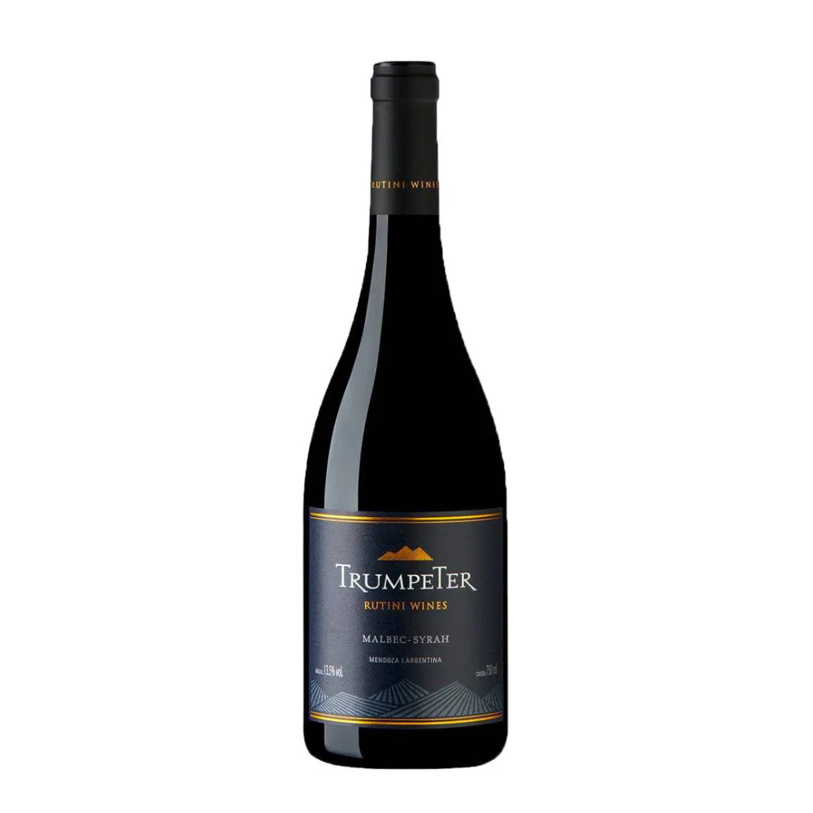

Trumpeter Malbec/Syrah- Rutini Wines

Este Friuli Sauvignon da adega Cormòns consegue demonstrar grande elegância e riqueza de aromas, graças ao microclima particular que se estabelece na planície friulana, protegida pelas montanhas dos ventos do norte e mitigada pela ação termorreguladora do mar.
A colheita ocorre manualmente nos últimos dez dias de setembro. O mosto macera durante muito tempo em prensas pneumáticas, a baixas temperaturas, de forma a garantir a melhor extracção das substâncias nobres presentes nas películas. Terminada a fermentação, o vinho estagia 6-7 meses sobre as borras finas.
Apresenta-se aos olhos com uma cor amarelo palha com nuances esverdeadas. O nariz é persuasivo e aromático, onde se alternam notas de pimenta verde com notas de noz-moscada. A entrada na boca é elegante e delicada, com boa estrutura e textura sedosa animada por notas de figo verde.